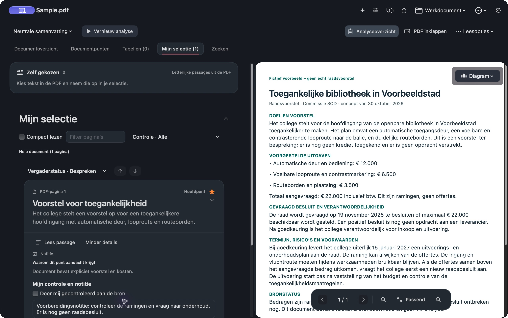

Het college stelt voor de hoofdingang van de openbare bibliotheek in Voorbeeldstad toegankelijker te maken. Dit is een voorstel ter bespreking; er is nog geen krediet toegekend en er is geen opdracht verstrekt.
Mac-app voor raads- en commissiestukken
Lees het hele stuk.
Houd de bron dichtbij.
CommissieWijzer helpt je lange raadsstukken voorbereiden. Volg een aandachtspunt terug naar de passage, zoek lokaal in het document en bewaar je eigen notities naast de pdf.
App Store-versie in voorbereiding · Nog geen download beschikbaar
Gratis en open source onder de MIT-licentie. Bekijk de broncode op GitHub

Van document
naar voorbereiding
naar voorbereiding
01
Pdf blijft leidend
02
Zoeken en bewaren op je Mac
03
Zelf AI-provider kiezen

Een controleerbare werkwijze
Van pagina’s naar
een goed voorbereide bespreking.
Analyse en oorspronkelijke tekst staan naast elkaar. Je kiest waar je begint, wat je bewaart en wat je exporteert.
STAP 01 · PDF INLEZEN
Begin bij het originele stuk.
Open een pdf met doorzoekbare tekst. CommissieWijzer leest tekst, leesvolgorde en tabellen in. Na import start de analyse automatisch met de provider die je hebt ingesteld.
Je document blijft zichtbaar tijdens het lezen.
Een bronvoorbeeld
Zo blijft het verschil zichtbaar
tussen voorstel en besluit.
Dit fictieve raadsvoorstel laat zien hoe je broninformatie kunt terugvinden. De fragmenten komen uit het meegeleverde voorbeeldbestand; dit is geen AI-analyse.
VOORBEELDSTAD · COMMISSIE SOD
CONCEPTToegankelijke bibliotheek
30 OKT 2026
DOEL EN VOORSTEL
Het college stelt voor de hoofdingang van de openbare bibliotheek in Voorbeeldstad toegankelijker te maken. Dit is een voorstel ter bespreking; er is nog geen krediet toegekend en er is geen opdracht verstrekt.
Broninformatie uit het fictieve document. Geen gegenereerde AI-uitkomst.
LOKAAL ZOEKDEMO
Fictieve bronZoek in de voorbeeldtekst
Zoeken gebeurt alleen in de vaste fictieve tekst op deze pagina.
Automatische deur en bediening: € 12.000 · Voelbare looproute en contrastmarkering: € 6.500 · Routeborden en plaatsing: € 3.500. Totaal aangevraagd: € 22.000 inclusief btw. Dit zijn ramingen, geen offertes.
De raad wordt gevraagd op 19 november 2026 te besluiten of maximaal € 22.000 beschikbaar wordt gesteld. Een positief besluit is nog geen opdracht aan een leverancier. Na goedkeuring is het college verantwoordelijk voor inkoop en uitvoering.
Bij goedkeuring levert het college uiterlijk 15 januari 2027 een uitvoerings- en onderhoudsplan aan de raad. De raming kan afwijken van de offertes. De ingang en vluchtroute moeten tijdens werkzaamheden bruikbaar blijven. Als de offertes samen boven het aangevraagde bedrag uitkomen, vraagt het college eerst een nieuw raadsbesluit aan.
Geen overeenkomst in de voorbeeldtekst. Pas je zoekterm aan.
De illustratieve werkruimte gebruikt alleen het fictieve document en de letterlijke bronfragmenten hierboven. Er wordt op deze website geen pdf geüpload of AI-analyse uitgevoerd.
In de werkruimte
Van de eerste lezing
tot je eigen export.
Werk met de onderdelen die je nodig hebt. De oorspronkelijke pdf en je eigen oordeel blijven centraal staan.
LEZEN
Een doorzoekbaar stuk
Open een pdf met leesbare tekst. De app verwerkt tekst, leesvolgorde en tabellen. De bron blijft naast de analyse zichtbaar, zodat een gevonden punt terug te volgen is naar de pagina.
- Lokale zoekfunctie in document en beschikbare analyse
- Filters op onderwerp en fysieke pagina
- Tabellen en bronpassages naast de pdf
VOORBEREIDEN
Raad en commissies
Gebruik een neutrale samenvatting of kies een eigen partijprogramma voor vergelijking. De app bevat indelingen voor raad en commissies SOD, LO en BES; de beschikbare onderwerpen hangen af van het document en de analyse.
- Open volledige bronpassages vanuit punten
- Bewaar notities, sterren en eigen passages
- Zoek ook in je notities en opgeslagen resultaten
BEWAREN EN DELEN
Jouw voorbereiding
Sla een werkdocument op je Mac op met de pdf, beschikbare resultaten, notities, selectie en leespositie. Het bestaande formaat .spdfwork blijft compatibel. Opnieuw openen start geen automatische analyse.
- Maak een PDF-samenvatting of exporteer je selectie
- Kies de scope en controleer de inhoud voor opslaan
- Bewaar werk lokaal op een locatie die jij kiest
AI-keuze
Lokaal waar het kan.
Online als jij dat kiest.
Na het importeren begint de analyse automatisch met de provider die in Instellingen staat. Je kunt het lezen, lokaal zoeken en eerder opgeslagen werk ook gebruiken als AI niet beschikbaar is.
Apple Intelligence
Verwerkt de AI-analyse lokaal op geschikte Macs waarop Apple Intelligence beschikbaar is.
- macOS 26 of later
- Compatibele Mac en beschikbaar model
- Geen CommissieWijzer-server
ChatGPT
Meld je aan met je ChatGPT-account. Er is geen API-sleutelinstelling in CommissieWijzer.
- Documentfragmenten voor de analyse gaan naar OpenAI
- Gekozen programma gaat mee bij vergelijking
- Modeltoegang en gebruikslimieten volgen je account
CommissieWijzer zelf vereist macOS 14 of later. Bekijk de privacyuitleg voor de gegevens per provider. AI-uitkomsten kunnen onjuist zijn: controleer belangrijke conclusies en citaten altijd in de oorspronkelijke pdf.
Gratis · Open source · Mac
Voorbereiden begint
bij de bron.
Bekijk de projectbron, lees hoe je een punt controleert of download het fictieve voorbeeld.
Lees de ondersteuning Download fictief voorbeeld-pdf Broncode op GitHub
App Store-versie in voorbereiding · Geen download beschikbaar